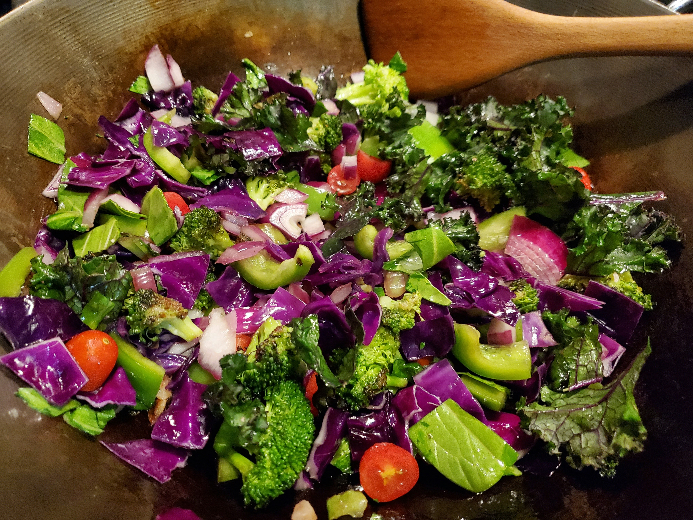

Chopped Salad with Dill Pickle Dressing

Photo by Lisa Scupien on Unsplash
Crisp, fresh romaine holds up to an ultrarich pickle-studded creamy dressing in this chopped salad.
Delicious salad for the simple ingredients. It is perfect to be prepared as a light lunch for work. Adding a hard boiled egg will pair wonderfully.
Ingredients
- 1/4 cup mayonnaise
- 3 tablespoons brine from dill pickle jar
- 2 tablespoons extra-virgin olive oil
- 1 tablespoon yellow mustard
- 1 tablespoon chopped fresh dill, plus more for garnish
- 1/8 teaspoon salt
- 1 (9- to 10-ounce) package chopped romaine hearts
- 8 ounces Swiss cheese, cut into 1/2-inch cubes
- 4 ounces diced ham
- 1 cup diced dill pickles
- 1/2 cup thin wedges red onion
Steps
- Combine mayonnaise, pickle brine, oil, mustard, dill, and salt in a screw-top jar. Screw on lid and shake well to combine.
- Combine romaine, Swiss cheese, ham, pickles, and onion in a large bowl. Add dressing; toss to combine. Garnish with dill. Serve immediately.
Home